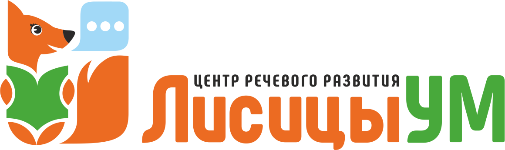

За 45 минут разберём,
почему ребёнок пока не заговорил
Спокойная индивидуальная встреча с логопедом или дефектологом. Берём малышей от 2 лет. Бесплатно и без обязательств – честно скажем, это просто темп развития вашего ребёнка или уже пора заниматься, и что делать дальше.
Выберите удобный способ записи:
Проводит педагог с большим успешным опытом работы с неговорящими детьми · Санкт-Петербург
Подойдёт, если ребёнку 2–4 года и он…
- Молчит или говорит критически мало (мама, папа, дай и лепет), а ровесники уже говорят фразами
- Всё понимает, но словарь почти не растёт месяцами
- А вы устали от «ждите, заговорит, приходите к логопеду к 4 годам» и не понимаете – это просто темп или уже пора заниматься
- Прошёл год ожидания, а сдвига нет – и «сам заговорит» вас больше не успокаивает
- Вам уже говорили о задержке речи или подозрениях – и вы хотите спокойно разобраться, без запугивания
Если ребёнок уже говорит фразами, но не выговаривает отдельные звуки или речь смазанная («каша во рту») – это другие направления. На диагностике мы это увидим и подскажем, куда идти.
Что смотрим за 45 минут
- Понимает ли ребёнок обращённую речь и простые инструкции
- Слух и слуховое внимание – как предпосылку формирования речи
- Состояние артикуляционного аппарата
- Коммуникативные навыки: зрительный контакт, указательный жест, интерес к игре – по игре многое видно
- Что уже есть в активной речи – слова, слоги, лепет, жесты
Дома трудно объективно оценить своего ребёнка – мешают тревога и привычка. Карточки, развивающие мультики и логомассаж сами по себе речь не запускают: говорить учат на занятиях, в живом взаимодействии. Мы спокойно посмотрим, как ребёнок реально общается.
Честно про запуск речи
Бывает, что это просто темп, а бывает – уже нужна помощь. На диагностике честно разберёмся, какой это случай, – а если пока можно подождать, так и скажем и не возьмём на занятия ради денег.
Говорить учат на занятиях, а таблетки, карточки или мультики – это дополнение. Назначения невролога мы не отменяем и не заменяем – дополняем их работой над речью.
Чем младше ребёнок, тем легче помочь. Но торопить и пугать не будем – решение и темп остаются за вами.
Кто проводит и почему бесплатно
Проводит педагог с большим успешным опытом работы с неговорящими детьми – логопед или дефектолог, который берёт малышей от 2 лет.
Почему бесплатно. Так мы знакомим родителей с центром. Мы ничего не навязываем: по итогам вы получите понятную картину и рекомендованный маршрут, а заниматься у нас или нет – решаете только вы.
Без волнения и оценок. Это спокойная встреча в игре, а не экзамен. Ребёнку будет не страшно и комфортно.
Если понадобятся занятия – логопед, дефектолог, нейропсихолог и детский психолог доступны по одному абонементу в одном центре, не нужно искать и возить ребёнка к каждому по городу.
Как проходит
- 1 Записываетесь в удобном мессенджере и выбираете время.
- 2 Приходите с ребёнком в удобный центр в Санкт-Петербурге – на выбор два адреса: Ленинский проспект, 57, корп. 2 или пр. Стачек, 99, ТРК «Континент».
- 3 Пока вы заполняете анамнез, специалист уже играет с ребёнком – знакомство и наблюдение идут параллельно, малышу комфортно.
- 4 Получаете устные рекомендации сразу и письменное логопедическое заключение в мессенджер – в день встречи или на следующий, плюс рекомендованный маршрут запуска речи.
Запишитесь сейчас
Запись занимает минуту. Диагностика индивидуальная, бесплатная и без обязательств – заниматься у нас или нет, решаете вы.
Без обязательств · решение принимаете вы